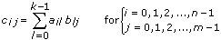
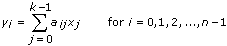
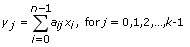

Performs the multiplication of two input matrices or an input matrix and an input vector. The data types you wire to the A and B inputs determine the polymorphic instance to use.
(FPGA Module) To multiply a matrix by a vector on an FPGA, use the Matrix*Vector Express VI.
A is the first matrix. The number of columns in A must match the number of rows in B and must be greater than zero: k>0. If the number of columns in A does not match the number of rows in B, the VI sets A x B to an empty array and returns an error.
B is the second matrix. If the number of rows in B does not match the number of columns in A, the VI sets A x B to an empty array and returns an error.
A x B is the matrix containing the result of the matrix multiplication A x B.
error returns any error or warning from the VI. You can wire error to the Error Cluster From Error Code VI to convert the error code or warning into an error cluster.
A is the first matrix. The number of columns in A must match the number of rows in B and must be greater than zero. If the number of columns in A does not match the number of rows in B, the VI sets A x B to an empty array and returns an error.
B is the second matrix. If the number of rows in B does not match the number of columns in A, the VI sets A x B to an empty array and returns an error.
A x B is the matrix containing the result of the matrix multiplication A x B.
error returns any error or warning from the VI. You can wire error to the Error Cluster From Error Code VI to convert the error code or warning into an error cluster.
A is the input matrix. The number of columns in A must match the number of elements in Vector and must be greater than zero. If the number of columns in A does not match the number of elements in Vector, the VI sets A x Vector to an empty array and returns an error.
Vector is the input vector.
A x Vector is the output vector containing the result of A multiplied by Vector.
error returns any error or warning from the VI. You can wire error to the Error Cluster From Error Code VI to convert the error code or warning into an error cluster.
A is the input matrix. The number of columns in A must match the number of elements in Vector and must be greater than zero. If the number of columns in A does not match the number of elements in Vector, the VI sets A x Vector to an empty array and returns an error.
Vector is the input vector.
A x Vector is the output vector containing the result of A multiplied by Vector.
error returns any error or warning from the VI. You can wire error to the Error Cluster From Error Code VI to convert the error code or warning into an error cluster.
Matrix A is the input matrix. The number of rows in Matrix A must match the number of elements in Vector V' and must be greater than zero. If the number of rows in Matrix A does not match the number of elements in Vector V', the VI sets V' x A to an empty array and returns an error.
V' x A is the output vector containing the result of Vector V' multiplied by Matrix A.
error returns any error or warning from the VI. You can wire error to the Error Cluster From Error Code VI to convert the error code or warning into an error cluster.
Matrix A is the input matrix. The number of rows in Matrix A must match the number of elements in Vector V' and must be greater than zero. If the number of rows in Matrix A does not match the number of elements in Vector V', the VI sets V' x A to an empty array and returns an error.
V' x A is the output vector containing the result of Vector V' multiplied by Matrix A.
error returns any error or warning from the VI. You can wire error to the Error Cluster From Error Code VI to convert the error code or warning into an error cluster.
If A is an n-by-k matrix and B is a k-by-m matrix, the matrix multiplication of A and B, C = AB, results in a matrix, C, whose dimensions are n-by-m. Let A represent the 2D input array A, B represent the 2D input array B, and C represent the 2D output array A x B. The VI calculates the elements of C using the following equation.

where n is the number of rows in A, k is the number of columns in A and the number of rows in B, and m is the number of columns in B.
Note The A x B VI performs a strict matrix multiplication and not an element-by-element 2D multiplication. To perform an element-by-element multiplication, you must use the Multiply function. In general, AB BA.
A x Vector
If A is an n-by-k matrix, and X is a vector with k elements, the multiplication of A and X, Y = AX, results in a vector Y with n elements. The VI calculates the elements of Y using the following equation.

where Y is the output A x Vector, A is the input matrix A, X is the input Vector, n is the number of rows in A, and k is the number of columns in A and the number of elements in Vector.
Vector x A
If X� is a row vector with n elements and A is an n-by-k matrix, the multiplication of X� and A, Y = X�A, results in a row vector Y� with k elements. The VI calculates the elements of Y� using the following equations.

and
X'=[x0x1 … xn–1]
Y'=[y0y1 … yk–1]
where Y� is the output V� x A, X� is the input Vector V�, A is the input matrix A, n is the number of elements in Vector V� and the number of rows in A, and k is the number of columns in A.
 Add to the block diagram
Add to the block diagram Find on the palette
Find on the palette


 BA.
BA.